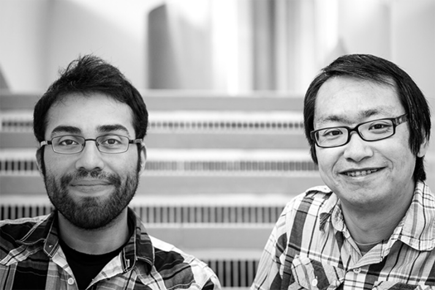

Steve Ramirez was feeling on top of the world in 2015. His father, Pedro Ramirez, had snuck into the United States in the 1980s to escape the civil war in El Salvador. Pedro Ramirez held jobs as a door-to-door salesman for tombstones, a janitor in a diner, and a technician in an animal lab. After years of 'round-the-clock work, Pedro Ramirez became a U.S. citizen. And here was his son, born in America, with a Ph.D. from the Massachusetts Institute of Technology, still in his 20s, being celebrated as one of the most exciting and promising neuroscientists in the country.
Steve Ramirez had published research papers with his MIT mentor Xu Liu that reported how they used lasers to erase fear memories, spur positive memories, and even fabricate new memories in the brain. The experiments were only in mice. But they were impressive. Memories are made of networks of brain cells called engrams. The lasers targeted specific cells in engrams. Zap those cells and the whole engram was muted. The pair of neuroscientists gave a popular TED Talk on memory manipulation and were featured in international press stories that invariably mentioned the plotlines in the movies Eternal Sunshine of the Spotless Mind and Inception could be real. Bad memories could be deleted. New memories could be implanted.
One night in 2013 Ramirez and Liu were celebrating the publication of one of their papers in a jazz lounge at the top of the Prudential Building in Boston. The music was grooving, and the city below glittered like stars. Ramirez thought, I've never been so happy and so fully alive.
That was unbearable. I didn't want to look at my phone, let alone our text history.
In early 2015, Liu, age 37, died suddenly. There had been no warning signs. Ramirez had never had a friend like Liu. Liu opened his mind to experiences in science he couldn't have imagined. Their relationship felt organic from Ramirez's first day in the lab. Liu joked they would always have chemistry doing science together. Grief is when the future your brain plans for is cut off. Ramirez's thoughts of doing science without Liu became a trapdoor that landed him in a cellar of pain.
A relief in that cellar is alcohol. Ramirez had been an enthusiastic social drinker. Now he was something more. After a long day at a neuroscience conference in 2017, Ramirez hit the bar and afterward partied with an old friend in his hotel room, binging on beer, whiskey, and vodka. Ramirez awoke the next morning in a panic. He couldn't breathe. He was choking on his own vomit. His friend heard him gagging and rushed into the room and rolled Ramirez on his side. At some point, Ramirez recalls, “through some miracle of biology, my brain and body decided to live on.” Live on, attend an alcohol support group, get his career back in order, and write a book about it all.
The book, How to Change a Memory, hooked me and didn't let go. Ramirez writes clearly about brain anatomy and how memory can be manipulated—in mice, yes, but also in humans. What I liked most about the book, I told Ramirez in a recent conversation, is its undercurrent: His academic research became intensely personal. Memories of his mentor and friend brought his research out of the lab and into the storm of his own brain. Memory was now a window into the meaning of his own life.
Ramirez, today an associate professor at Boston University, spoke with ingratiating candor and energy as we discussed his personal experiences and the weird, pliable, and redemptive nature of memory.

CHEMISTRY: Steve Ramirez and his mentor and close friend Xu Liu, who died in 2015 at age 37. Liu joked with Ramirez that they would always have chemistry doing science together. Photo courtesy of Steve Ramirez.
How did the death of your mentor and close friend Xu Liu affect you?
I had this real existential crisis. My thoughts were almost nihilistic. I began thinking, “Why am I doing this? Why is anyone doing anything? What is the real purpose behind it?” Then, slowly, I began appreciating that for as long as I have a life, I can transform some part of that life into a career in science to make discoveries that can be of service to the world. Learning to live with grief was accepting that it never goes away. I began asking myself, “What would Xu do?” I learned a person really does live on as a memory inside of you.
It's awfully tough, though, to realize someone you spent most every day with is now a memory.
Yes, yes, it is. At first, it didn't feel real. It felt foreign. I understood the emptiness that people talk about when they lose someone. It really did feel like you lost your most important limb. You're physically not the same anymore. I couldn't stop thinking, “What is death like?” Xu was so animated as a person. That this person no longer has a physical form is the grandest mystery that humanity has ever had to wrestle with. And in that moment, I realized, “Damn, I certainly don't have answers for those questions.” At the height of grief, it was just a sense of anger and sadness. Anger that we're so fragile biologically and there's got to be a finish line. And sad because I had to figure out how to grieve and honor someone at the same time. I was so used to having him by my side.
Did you wish you could do an Eternal Sunshine of a Spotless Mind on your own brain? Erase your painful memory of Liu's death?
You know, I did think about it. But honestly, I don't think I ever seriously wanted to delete any aspect of those memories. There's a part of me that's like, “You'll never move past this. But you will grow and learn to maintain this added weight of death and finality. You'll learn to carry it with you.” If the grief really continued to impair me in my work, then maybe the “eternal sunshine” scenario becomes more of a reality. But I am weirdly fortunate enough to know that this is something I could handle, even if it takes a decade-long odyssey to figure out.
Grief may be “an adaptive form of learning,” you write. What did your own grief teach you?
It taught me how powerful memory is. At first, what helped nudge me forward was drinking. I felt temporarily disinhibited enough to let my thoughts and memories of Xu come in. What did he mean to me? What did the last time I saw him mean to me? His last text to me was, “Let's do this together.” That was unbearable. I didn't want to look at my phone, let alone our text history. So, drinking helped open the floodgates. What I didn't realize, of course, was how unbelievably unsustainable that is. When you keep drinking, feelings and memories start to black out. And then you reach the point of numbness. I needed to build a life where I could access those memories and reframe them without drinking. And that was the hardest thing I had to do. We can become the master of memory. Which I'm certainly not. But at least I've tried to reframe what memories mean to me in a way that feels purposeful.
Every moment is a once-in-a-lifetime experience. We can never get any moment back.
Did you go to AA?
No, I was in an online recovery community. It was definitely the thing that saved my life. I always knew I wasn't alone in addiction. But seeing and experiencing it was a whole other ballgame. In those meetings, you see a part of yourself in everyone. And you also see what you can become if you stop drinking, or what you can become if you continue drinking. I felt like the meetings were a way of planting my life in a parallel universe and pressing fast-forward and rewind. You meet people who struggled for 20, 30, 40 years, and what that leads to, as well as people who have been sober for 20, 30, 40 years, and what that leads to. It's the whole wealth of human experience in a room. I think it's the most powerful thing I've ever done. It felt like the opposite of addiction is connection, and that was instantly real to me in those meetings.
One of the most fascinating things I learned from your book is the brain cells that form a memory are not the same cells that are activated when you recall a memory. That's wild. It underscores that memories are not permanently implanted in our brains.
Right. That's a leading theory in the field right now. We don't conclusively know that they're not the same cells. But we have every reason to believe they are. If you have—I'm going to make this up—1 million specific cells that were active during an experience from when you were 18, when you recall that experience, only a very small fraction of that million are being reactivated. So, you're not getting all the million cells coming back the way they would if you were to hit rewind on a video. It's much more dynamic and malleable and has morphed and changed over time, as you've morphed and changed over time as well.
“Know thy memory,” you write. “It contains our conscious and unconscious self—it contains all of us.” But learning from you and other neuroscientists like Charan Ranganath that memory is also malleable and changeable sparks its own kind of existential crisis. Our self is a mirage. What are we supposed to do with that information?
You're right. Memory is malleable, it's weird, it's flexible, it's pliable. It's certainly not this vertical, stable representation of the past. What we do with that information depends on our goal. Is it to sit by the campfire and tell stories and share memories with our best friends? We all remember things slightly differently and so maybe we get into arguments over it, “No, it happened this way.” And that serves a great purpose. In a court of law, where a case depends on memory, the consequences are much more serious, and other factors may need to come into play to triangulate what happened.
Knowing memories are malleable has consequences for us personally, too. Maybe I have aspects of my past that I'm trying to come to terms with, to either resolve or celebrate. Let me pull them out of my brain library, scribble some notes of what I know now, and add some nuggets of wisdom that I hope that I've acquired through life. That changeability can help me learn from my past, so I'm not condemned to it. I can revisit it, reframe it, and either learn from it or just package the book away and learn from it another time. So, malleability can be a blessing and a curse, depending on how we look at it. I like to look at it as a blessing.
The price we pay for imagination and cognition is having memories like Silly Putty.
Liu said to you one day, “Everything you live through is part of who you are. Everything. Sometimes you get caught in a loop, wondering what you could have done differently, but the reality is that you can never undo the past. You can only redo it.” How do you understand that now?
Very, very physically and deeply. Because he's right. It's the one law of physics that, as far as I know, we will never be able to break. Every moment is a once-in-a-lifetime experience. We can never get any moment back. Time is a unidirectional arrow that we can bend and warp and fast-forward but can't rewind.
When we accept that we can't rewind the past, that every moment will never happen again, we can say, “If I can't get the past back, let me anticipate what's incoming.” If I can influence what's incoming, then it can be an experience for growth. I can go to bat again. I can say, “OK, maybe the first time was a strikeout, and I can't get that strikeout back, but I'm a little bit more seasoned now, and I see the curve balls incoming. So let me try to swing the bat a little differently and see if that can adjust my future.”
Memories can feel so real, regardless of whether they're accurate or not. Why does the brain have a hard time distinguishing between false and real?
My guess is that, from the brain's perspective, experience is experience. Experience leaves its imprint on the Silly Putty that is the brain. It's almost like it doesn't matter whether it's real or false. The brain has a hard time distinguishing between the two because, for the most part, it doesn't have to. One of the theories out there is the reason why memories can be so fallible or warpable is because by recombining the building blocks of our past, we can imagine ourselves in the future. The net positive is we are more likely to survive by anticipating the future. So, the price we pay for the human gift of imagination and cognition is having memories like Silly Putty. From the brain's perspective, that's good enough.
That's evolution talking.
Yes, exactly. Some things are better for us adaptively than others. So, even if some bad thing piggy-backed along, that's OK. It's just a kind of an evolutionary side effect.
When we have experiences, not everything gets recorded, right? Most of our lives is simply forgotten.
It's a really interesting question because the common consensus is, yes, we forget or don't remember all the irrelevant details because we're bombarded with information left and right. My opinion is that it's still an unsolved mystery of the brain.
Based on the consensus of neuroscience, what percentage of experiences do our brains store?
My guess is that people think we store about 5 percent—that is, really store it, the stuff that's meaningful to us. But I think the brain stores so much more than we give it credit for. We all have anecdotes of remembering things that we hadn't thought of for 40 years or since we were 5 years old. To me, that's evidence that we probably store more like 80 percent. We just don't need to access it all the time, because it tends to be irrelevant most of the time. I don't really need to remember what I had for lunch nine days ago. But the fact that we can recall memories that were seemingly gone for decades is to me evidence that there's a rich repository there that remains under the hood of consciousness.
At some point, if the right cue matches up, suddenly we have this eureka moment. When we're in a good mood, we're likely to recall good memories. When we're in a bad mood, we're likely to recall bad memories. A lot of the memories that come flooding back from the past tend to have an emotional tinge to them. You feel something in remembering them. And that's not by accident because the emotion part is our brain's way of saying that once upon a time this really mattered to you.
You seem so even-tempered, Steve. But you were down-and-out there for a while. What ultimately got you back to a good place?
Well, I'm both the calm and the storm. I just needed to accept that because I'm a cup-is-nine tenths-full person, and my parents are as well, I still have this unshakable hope and optimism about the world in me. They were suffocated for a while by things that life can be. We all go through something that is BS, unfair, and it just sucks to go through. And it might not have any purpose or meaning at that moment. But I'm willing to bet that in five or 10 years or however long, someone at some point is going to come up to you with that same problem, and now suddenly you can connect with them, offer a nugget of wisdom. That's a moment of redemption. And I've learned to keep my eyes open for more of those moments now. 
Lead image: Lightspring / Shutterstock